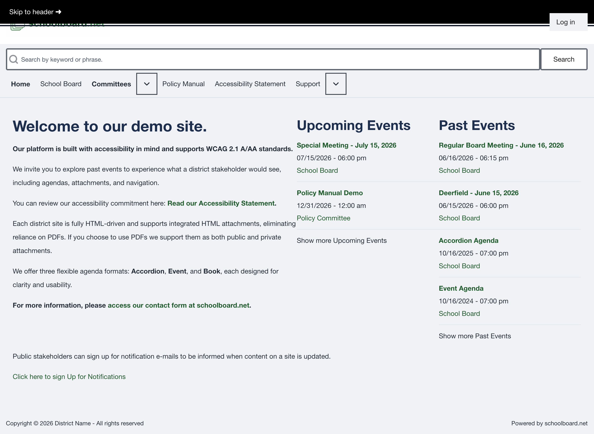

Accessibility and help¶
schoolboard.net pages support keyboard navigation, browser zoom, and common assistive technology.
Keyboard controls¶
| Key | Action |
|---|---|
| Tab | Move forward through links and controls |
| Shift+Tab | Move backward |
| Enter | Open a link or activate a focused control |
| Space | Operate many buttons and agenda toggles |
| Escape | Close a supported menu or dialog |
| Arrow keys | Move through supported menus |

Figure SB-BRD-021. Visible skip link during keyboard navigation.
Browser zoom and screen readers¶
Use browser zoom to enlarge text. Use page headings and descriptive link labels to move through content with a screen reader. On Windows, use the district-approved screen reader; VoiceOver is built into macOS.
Quick troubleshooting¶
| Problem | What to try |
|---|---|
| Site does not load | Confirm the district address and internet connection, then reload. |
| Page appears outdated | Refresh and reopen the meeting from Home. |
| Private materials are missing | Confirm that you are signed in, then contact the administrator. |
| Agenda heading does not open | Focus it with Tab and press Enter or Space. |
| Search finds nothing | Shorten the phrase and confirm that you are signed in. |
| Reset message does not arrive | Check spam, then ask the administrator to verify the account email. |
Request help¶
Start with the district's Board administrator or clerk. Include:
- Meeting title and date.
- Page address.
- Agenda section or control label.
- What you expected and what happened.
- Browser and device.
- Assistive technology, when relevant.
- A screenshot with private information removed, when possible.
Related Topics¶
Revision History¶
| Version | Date | Status | Summary |
|---|---|---|---|
| 1.0 | 2026-07-13 | Review Draft | Online accessibility, keyboard, and troubleshooting guidance. |